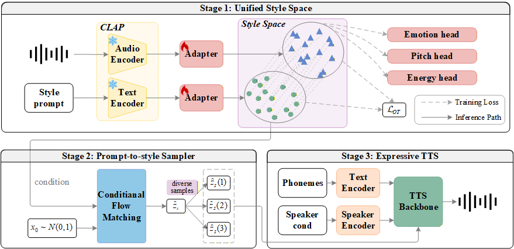
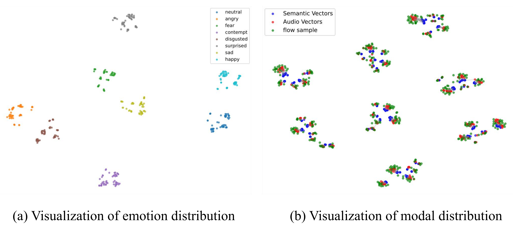

Natural language prompts provide a flexible interface for expressive text-to-speech (TTS), but cross-modal discrepancy and one-to-many mapping make reliable style control difficult. To address these issues, we propose OTAFlow, a hierarchical framework for cross-modal style modeling. First, optimal transport alignment, contrastive learning, and multi-task supervision are jointly optimized to construct a unified style space that preserves instance-level correspondence and disentangles expressive factors. Second, a conditional flow matching module is introduced to model the residual modality gap, enabling diverse acoustic style embeddings to be generated from a single prompt. When integrated into a downstream TTS backbone, OTAFlow demonstrates stronger style retrieval ability and more accurate style synthesis, producing expressive speech that is both diverse and controllable.

